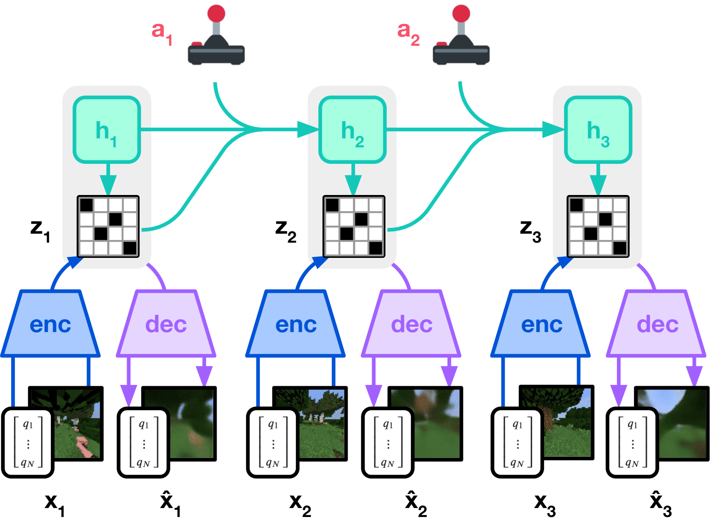
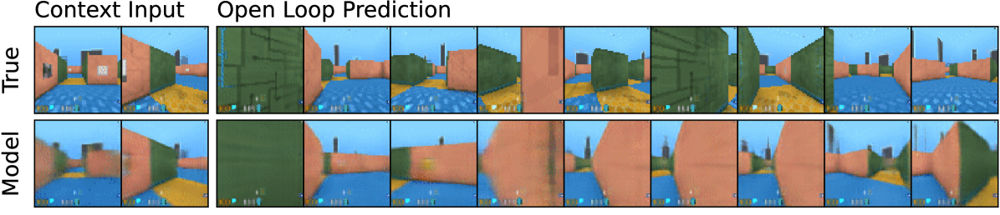
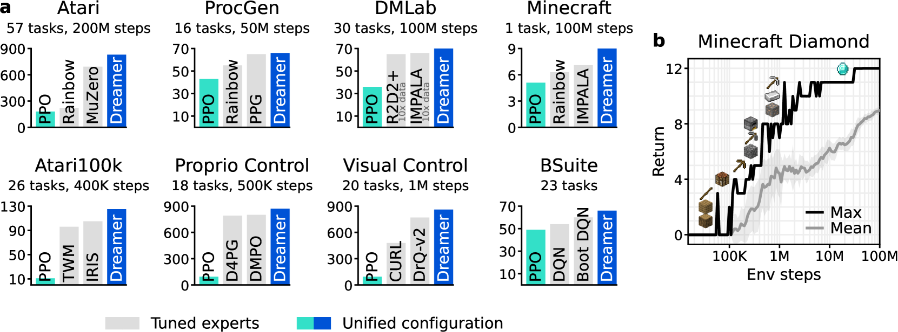
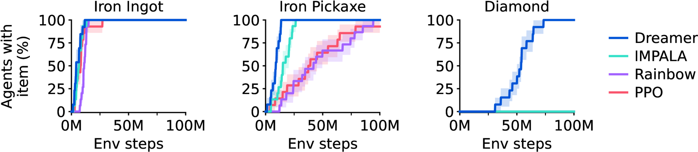

Mastering Diverse Domains through World Models
原论文摘要 · English Abstract
Developing a general algorithm that learns to solve tasks across a wide range of applications has been a fundamental challenge in artificial intelligence. Although current reinforcement learning algorithms can be readily applied to tasks similar to what they have been developed for, configuring them for new application domains requires significant human expertise and experimentation. We present DreamerV3, a general algorithm that outperforms specialized methods across over 150 diverse tasks, with a single configuration. Dreamer learns a model of the environment and improves its behavior by imagining future scenarios. Robustness techniques based on normalization, balancing, and transformations enable stable learning across domains. Applied out of the box, Dreamer is the first algorithm to collect diamonds in Minecraft from scratch without human data or curricula. This achievement has been posed as a significant challenge in artificial intelligence that requires exploring farsighted strategies from pixels and sparse rewards in an open world. Our work allows solving challenging control problems without extensive experimentation, making reinforcement learning broadly applicable.
编码器把观测压成离散表征
观测 $x_t$ → 离散随机表征 $z_t$，1% 均匀混合防 KL 尖峰
RSSM 循环预测下一表征与奖励
确定性状态 $h_t$ 递推，预测 $\hat{z}_t$、$\hat{r}_t$ 与继续标志 $\hat{c}_t$
解码器重建观测成形表征
重建 $\hat{x}_t$ 是世界模型的主信号，逼表征保留控制所需信息
在想象轨迹上训练行动者—评论家
想象视野 $T=16$、$\lambda$-回报、symlog/twohot 评论家
真实环境执行、经验回写再训模型
三路并发循环：交互收集、批量训模型、想象中练行为
问题与动机
强化学习长期被「一域一调参」困住：PPO 虽然通用，但性能常常低于专用算法；而连续控制、离散动作、稀疏奖励、图像输入、三维空间，各自都有调得极专的专家算法。换一个新领域，就要重新花大量人力与算力调超参，这对昂贵模型或调参成本高昂的任务几乎是不可接受的瓶颈。 论文把目标定为「通用算法」：不靠针对每个任务调参，而是让同一套配置在 8 个领域、150 多个任务上都取得好成绩。同时，它挑了 Minecraft 挖钻石这个公认难题做试金石——开放世界、程序化生成、稀疏奖励、长时程，此前的方法都要靠人类演示数据或课程学习才能走到钻石。 关键洞察在于：脆弱性的根源不在「世界模型」这个想法本身，而在不同领域的信号量级差异——奖励尺度、观测尺度、回报分布可以差几个数量级。因此解法不是更大的模型，而是一组让学习对量级不敏感的鲁棒化技术：归一化、平衡与变换。
- 同一配置跑遍 8 个领域、150 多个任务，不逐任务调参
- 把 Minecraft 从零挖钻石作为通用性的硬检验：此前方法依赖人类数据或课程
- 脆弱性的根源是跨域信号量级差异，而非世界模型思路本身
核心思想
DreamerV3 仍是「世界模型 + 潜在想象 + 行动者—评论家」三件套：世界模型从交互中学习环境的压缩表征与动力学，行动者与评论家只在世界模型想象出的抽象轨迹上训练；与环境交互时，行动者直接采样动作，不做前瞻搜索。 行动者要最大化的回报定义为：
$$R_t \doteq \sum_{\tau=0}^{\infty}\gamma^{\tau}r_{t+\tau}$$
其中 $r_{t+\tau}$ 是未来第 $\tau$ 步的奖励，$\gamma=0.997$ 是折扣因子（衡量「未来的奖励现在值多少」），$\tau$ 是从当前时刻起的步数偏移；评论家要估计的就是这个 $R_t$ 在当前策略下的分布，行动者则要让它最大。 真正的新东西是「鲁棒化三板斧」：归一化（回报归一化、symlog 变换）、平衡（KL 损失的自由比特与小权重、动静态损失的分配）与变换（symlog/symexp、twohot 编码）；三者共同保证：无论奖励是 0.01 还是 10000，梯度尺度与学习动态都保持稳定。
- 世界模型学环境，行动者—评论家在想象中练行为
- 行动者与评论家只看模型状态 $s_t \doteq \{h_t, z_t\}$，不直接看原始像素
- 鲁棒化而非堆规模，是跨域通用性的主因
模型结构与关键机制
世界模型是循环状态空间模型（RSSM），六个部件各司其职：
$$\begin{aligned} h_t &= f_{\phi}(h_{t-1}, z_{t-1}, a_{t-1}) \\ z_t &\sim q_{\phi}(z_t \mid h_t, x_t) \\ \hat{z}_t &\sim p_{\phi}(\hat{z}_t \mid h_t) \\ \hat{r}_t &\sim p_{\phi}(\hat{r}_t \mid h_t, z_t) \\ \hat{c}_t &\sim p_{\phi}(\hat{c}_t \mid h_t, z_t) \\ \hat{x}_t &\sim p_{\phi}(\hat{x}_t \mid h_t, z_t) \end{aligned}$$
这里 $h_t$ 是确定性循环状态（由序列模型 $f_{\phi}$ 从上一步状态 $h_{t-1}$、表征 $z_{t-1}$ 与动作 $a_{t-1}$ 递推得到），$x_t$ 是当前观测，$z_t$ 是编码器 $q_{\phi}$ 从观测中抽出的离散随机表征，$\phi$ 是世界模型的全部参数；带帽子的量都是预测值：$\hat{z}_t$ 是动力学预测的下一表征，$\hat{r}_t$ 是预测奖励，$\hat{c}_t$ 是预测的回合继续标志，$\hat{x}_t$ 是解码器重建的观测——重建的唯一作用是逼表征保留控制所需的信息。 离散表征是关键设计：编码器与动力学预测器输出一组 softmax 分布的采样，用直通梯度回传；为防止 KL 损失尖峰，两个分布都被写成 1% 均匀分布与 99% 网络输出的混合，使分布永远无法完全确定。自由比特把动力学与表征损失下限截断在 1 nat（约 1.44 比特），让学得差不多时停下来、把容量留给预测损失。 三项损失的权重全域固定为 $\beta_{\mathrm{pred}}=1$、$\beta_{\mathrm{dyn}}=1$、$\beta_{\mathrm{rep}}=0.1$，其中 $\beta_{\mathrm{pred}}$、$\beta_{\mathrm{dyn}}$、$\beta_{\mathrm{rep}}$ 分别是预测损失、动力学损失与表征损失的权重。过去的世界模型要按环境视觉复杂度单独调表征损失权重，DreamerV3 用「自由比特 + 小表征权重」的组合一次性解决了这个两难；向量观测还要先过 symlog 变换，防止大输入与大重建梯度破坏平衡。 量级变换本身长这样：
$$\operatorname{symlog}(x) \doteq \operatorname{sign}(x)\ln(|x|+1), \qquad \operatorname{symexp}(x) \doteq \operatorname{sign}(x)\big(\exp(|x|)-1\big)$$
其中 $x$ 是待变换的标量（如奖励或回报），$\operatorname{sign}(x)$ 保留符号，$\ln(|x|+1)$ 压缩大幅值；与普通对数不同，symlog 在原点附近近似恒等、且能处理负数，逆变换 symexp 把网络输出还原回原始量级。奖励与评论家目标用 symexp twohot 损失：网络输出指数间隔分箱 $B$ 上的 softmax 分布，预测读作各分箱位置按概率加权的平均，梯度大小就此与目标量级解耦。
- RSSM：确定性循环状态 $h_t$ + 离散随机表征 $z_t$
- 自由比特 1 nat 与 1% 均匀混合，专治 KL 尖峰与退化解
- $\beta_{\mathrm{pred}}=1$、$\beta_{\mathrm{dyn}}=1$、$\beta_{\mathrm{rep}}=0.1$ 三权重全域固定
- symlog 压缩量级、twohot 解耦梯度与目标尺度


训练与推理流程
训练是一个三路并发的循环：与环境交互收集经验进回放池；同时从回放中采样序列批量训练世界模型；再从回放状态出发、用世界模型与当前行动者想象出长度 $T=16$ 的抽象轨迹，在想象中训练行动者与评论家。 想象视野只有 $T=16$ 步，视野之外的回报靠 $\lambda$-回报折进来：
$$R^{\lambda}_t \doteq r_t + \gamma c_t\big((1-\lambda)v_t + \lambda R^{\lambda}_{t+1}\big), \qquad R^{\lambda}_T \doteq v_T$$
其中 $\lambda$ 是在单步奖励与长远估计之间插值的系数，$v_t$ 是评论家对状态价值的估计，$c_t \in \{0,1\}$ 是回合是否继续的标志（$c_t=0$ 表示回合结束、截断后续回报），$R^{\lambda}_T \doteq v_T$ 用评论家估计收尾、把想象视野之外的回报也折进来。 评论家学的不是单点值，而是回报的分布：用指数间隔分箱的类别分布加 symexp twohot 损失。为防早期奖励预测器与评论家随机初始化输出过大、拖慢学习，二者的输出权重矩阵初始化为零；评论家还用自身参数的指数滑动平均做正则，并以 $\beta_{\mathrm{val}}=1$ 的权重学想象轨迹、以 $\beta_{\mathrm{repval}}=0.3$ 的权重补学回放轨迹。 行动者用 Reinforce 估计加熵正则，熵系数固定为 $\eta=3\times 10^{-4}$。为让这个固定系数在所有领域都合理，回报先做归一化：用分位数范围 $S$ 除回报，且只缩小大幅值、$L=1$ 以下的小回报保持原样；$S$ 的定义是：
$$S \doteq \mathrm{EMA}\big(\mathrm{Per}(R^{\lambda}_t, 95) - \mathrm{Per}(R^{\lambda}_t, 5), 0.99\big)$$
其中 $\mathrm{Per}(\cdot, 95)$ 与 $\mathrm{Per}(\cdot, 5)$ 分别是回报批次的 95% 与 5% 分位数，$\mathrm{EMA}(\cdot, 0.99)$ 是衰减系数为 0.99 的指数滑动平均——用分位距而非极值，估计就对异常值鲁棒。推理时只采样行动者、不做规划。
- 想象视野 $T=16$，$\lambda$-回报把视野外的价值也折进来
- 评论家学分布：指数分箱 + symexp twohot 损失
- 输出权重零初始化，评论家加 EMA 自身正则
- 回报归一化只压大幅值、保留稀疏奖励下的探索
实验与结果
8 个领域、150 多个任务、固定超参、每个智能体只用一块 A100：Atari（57 个游戏、2 亿帧）超过 MuZero、Rainbow 与 IQN；ProcGen（16 个游戏、5000 万帧）追平调参专家 PPG、超过 Rainbow；DMLab（30 个任务、1 亿帧）超过 10 亿步水平的 IMPALA 与 R2D2+，数据效率提升超过 1000%；Atari 100k（26 个游戏、40 万帧）超过 IRIS、TWM、SPR 等方法。 本体控制（18 个任务、50 万步）与视觉控制（20 个任务、100 万步）均刷新最好成绩，超过 D4PG、DMPO、MPO 与 DrQ-v2、CURL；BSuite（23 个环境、468 种配置）同样刷新最好成绩，尤其在奖励尺度鲁棒性一类上提升明显。 Minecraft 是最硬的检验：每回合都是全新随机生成的无限三维世界，最长 36000 步（30 分钟），要从稀疏奖励中依次发现 12 种物品。开箱即用、默认超参，训练的全部智能体都在 1 亿步内挖到钻石，而此前最强的基线最多只走到铁镐。对比：VPT 靠人类数据行为克隆加微调、用 720 块 GPU 训 9 天，DreamerV3 只用 1 块 GPU 训 9 天、零人类数据。 消融与扩展：14 个任务上的消融显示每项鲁棒化技术都在部分任务上关键，其中世界模型 KL 目标贡献最大，其次是回报归一化与 symexp twohot 回归；去掉重建梯度后性能大跌，说明世界模型主要靠无监督目标、而非奖励梯度成形。模型从 1200 万参数扩到 4 亿参数，性能单调上升且所需交互更少；提高回放比同样可预期地提升性能。
- 固定超参横扫 8 域，Atari 超 MuZero、DMLab 数据效率超 1000%
- Minecraft：全部智能体 1 亿步内挖到钻石，零人类数据
- 消融：KL 目标贡献最大；重建损失是世界模型的主信号
- 12M–400M 参数单调变好：规模与回放比都可预期地换性能
实验结果 · 数据
各基准包含的任务数量（论文正文明确报告）
| 项目 | 数值 |
|---|---|
| BSuite | 23 个任务 |
DMLab：超越 IMPALA 与 R2D2+ 所需的环境交互量（论文正文明确报告）
| 项目 | 数值 |
|---|---|
| IMPALA / R2D2+ | 1000 百万帧/步 |
任务数量图说明评估的广度：57 个 Atari 游戏与 468 种 BSuite 配置意味着「150+ 任务」不是虚数，而是覆盖离散/连续、视觉/本体、稠密/稀疏奖励的系统性验证；但要注意，任务数多不等于难度均匀，真正的含金量在第二张图的 DMLab 对比。
DMLab 对比的数字：DreamerV3 用 1 亿帧就超过了在 10 亿步水平上的 IMPALA 与 R2D2+，数据量差 10 倍、论文称数据效率提升超过 1000%。不过要打折扣——这两个基线本就不是为数据效率设计的，论文正文自己也承认这一点，所以这组数字更适合读作「世界模型路线的样本效率优势」，而非「同等优化下的公平胜负」。
主文没有逐任务分数表，图 1 的曲线只能定性读；最硬的定量陈述其实是 Minecraft：全部智能体 1 亿步内挖到钻石、此前基线无人做到，以及 1 块 GPU 对 VPT 的 720 块 GPU——这组对照不依赖分数口径，是全文最站得住脚的数字。


局限与争议
主文没有给出逐任务的精确分数表，图 1 是汇总曲线，精确数字只在附录材料里；因此跨方法的「超过多少」在主文层面只能定性复述，读者要核对具体分数得去附录与开源实现。 部分对比并不完全对等：DMLab 的 IMPALA 与 R2D2+ 本就不是为数据效率设计的，论文自己也承认这一点；Atari 100k 的 EfficientZero 用了提前重置关卡等增加数据多样性的做法，比较口径并不完全一致。 Minecraft 用了「方块破坏」设定，因为原始动作空间会让随机策略难以长时间按住按键；这是一个为学习可行性做的动作空间简化，离「直接操作键鼠玩原版游戏」仍有距离。此外 Minecraft 单智能体要训 9 天，「开箱即用」不等于「便宜」。 方法层面：想象视野固定 $T=16$、折扣 $\gamma=0.997$ 等仍是人为选定的常量，只是它们恰好跨域通用；世界模型仍是单任务训练，没有学到跨任务共享的通用世界知识；稀疏奖励下的探索主要依赖熵正则，没有显式的内在好奇心或目标条件探索。
- 主文无逐任务分数表，精确数字在附录
- DMLab 对手本非为数据效率设计；Atari 100k 对比口径有差异
- Minecraft 用了方块破坏动作空间简化，单智能体仍需 9 天
- 仍是单任务世界模型，未实现跨任务共享的通用世界知识
为什么今天还重要
它把「通用强化学习」的评判标准从「单域刷分」改成了「固定配置跨域」：后来的通用智能体工作，包括世界模型规模化与多任务路线的探索，基本都沿用这套「同一配置、多域验证」的范式。 symlog/symexp 与 twohot 回归、回报归一化等技巧成了世界模型与值学习里的标准零件，被后续大量实现直接复用；「梯度尺度与目标尺度解耦」这条设计原则，至今仍是处理跨量级信号时最省事的解法。 Minecraft 从零挖钻石是世界模型路线的里程碑：它证明长时程、稀疏奖励、开放世界任务可以不靠人类数据、只靠「学世界 + 在想象中练」解决；这条路线直接通向今天用互联网视频预训练世界知识、再用想象做决策的研究方向。
- 确立了「固定配置、多域验证」的通用算法评判范式
- symlog、twohot、回报归一化成了后续实现的标配零件
- 证明长时程稀疏奖励任务可以零人类数据解决
关键术语
- RSSM（循环状态空间模型）
- 用确定性循环状态 $h_t$ 预测离散随机表征 $z_t$ 的世界模型骨架，是 DreamerV3 想象能力的底座。
- 潜在想象
- 行动者与评论家不在真实环境、而在世界模型滚出的抽象表征轨迹上训练，从而用很少的真实交互练出行为。
- symlog / symexp
- 对称对数变换及其逆变换，把任意量级的目标压缩到可学习的尺度，同时保留符号、原点附近近似恒等。
- twohot 编码
- 把连续标量编码为相邻两个指数间隔分箱上的 soft 分布，让分类交叉熵损失的梯度不再随目标量级变化。
- 自由比特
- 把 KL 损失下限截断在 1 nat，防止表征被压得过于简单、丢失控制所需信息。
- 回报归一化
- 用 5%–95% 分位距的滑动平均估计回报尺度 $S$，只缩小大幅值回报，让固定熵系数跨域通用。
思考题
思考题 1：为什么 DreamerV3 不直接归一化优势（advantage）或用标准差归一化回报，而是坚持用分位距 $S$ 且只缩小大幅值？这种选择在稀疏奖励下有什么关键差别？
查看参考答案
判断：分位距 $S$ 是三者中唯一同时满足「对异常值鲁棒」与「稀疏奖励下不放大噪声」的选择。理由链：归一化优势会给「最大化回报」固定权重，不管奖励是否够得着；用标准差归一化时，稀疏奖励下回报的标准差接近零，会把噪声放大到压过熵正则、探索停滞；而 $S$ 用 5%–95% 分位距加 0.99 滑动平均估计，对个别高回报回合不敏感，再配合 $L=1$ 的下限只压大幅值、小回报原样保留，论文明确指出此前几类归一化都找不到跨域稳定的超参，而这套做法在 150 多个任务上成立。
思考题 2：世界模型 KL 目标的消融贡献最大，而重建损失被证明是世界模型的主信号——这对「世界模型应该主要靠奖励梯度成形」的传统看法意味着什么？
查看参考答案
判断：世界模型的表征质量主要来自无监督的重建与动力学目标，而非任务奖励。理由链：消融显示去掉重建梯度后性能大跌，去掉奖励与价值梯度影响小得多，且 KL 目标的贡献最大——这说明「先学世界、再学任务」的分工是成立的，也为后来用互联网视频等无奖励数据预训练世界模型留了接口；但反过来说，表征里仍可能塞进大量与控制无关的细节，需要 KL 约束与 $\beta_{\mathrm{rep}}=0.1$ 的小表征权重去压制，这正是 DreamerV3 仍需精细平衡的原因。
思考题 3：如果把 DreamerV3 的固定超参直接搬到一个全新的领域（比如真实机器人操作），你认为最可能先失效的是哪一环：symlog 变换、回报归一化、还是想象视野 $T=16$？为什么？
查看参考答案
判断：最可能先失效的是想象视野 $T=16$ 与折扣 $\gamma=0.997$ 这一对时程常量。理由链：真实机器人任务的时程与奖励延迟千差万别，固定 16 步想象在需要长程信用分配的任务上会系统性低估远期回报；而 symlog 变换与回报归一化处理的是量级问题，与时程无关，跨域时更稳健。不过这只是推理：论文只在 8 个仿真域验证了固定配置，真实机器人不在其中，迁移前应用 Crafter 或 DMLab 这类长时程任务上的表现做对照，而不是直接默认通用。
谱系与位置
在 interactive world model 的脉络里，DreamerV3 是 Dreamer 路线的第三代：它继承了 World Models（2018）「学一个世界模型、再在里面规划」的纲领，继承了 DreamerV2（2020）的离散表征与潜在想象训练，也继承了 PlaNet、DreamerV1 的循环状态空间模型（RSSM）骨架。与上一篇精读的 IRIS（Micheli et al., 2022）相比，两者都认同「离散表征 + 世界模型」的路线，但走了岔路：IRIS 用 Transformer 做世界模型、主攻 Atari 100k 这类小数据场景的样本效率；DreamerV3 则坚持 RSSM 循环结构，不跟进 Transformer，把创新押在跨域鲁棒性上——目标不是在一个基准上刷出峰值，而是让同一套超参走遍 150 多个任务。论文在 Atari 100k 上报告超过了 IRIS、TWM 等方法，这既是对 IRIS 路线的回应，也标志着世界模型研究的重心从「单域样本效率」转向「固定配置的跨域通用性」；它与 MuZero 的关系则是另一条对照线：DreamerV3 在 Atari 上超过 MuZero，却只用了后者一小部分的计算资源。